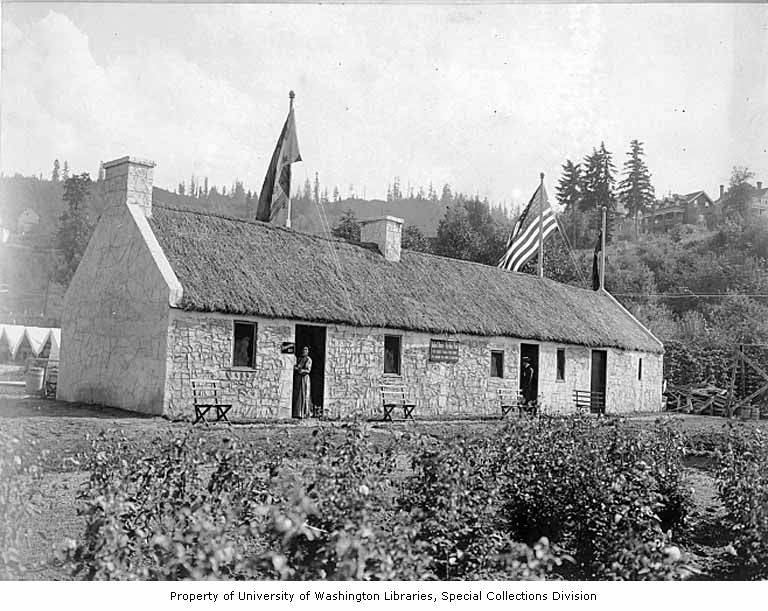

Robert Burns Cottage
Location in 1905: 45.5371442, -122.71185368Current Location: 45.53899473, -122.70964891 (or rather, later in 1905)
A replica, I hope. Erected in the experimental gardens. Later torn down and re-erected next to the Trail to make it easier to visit. 